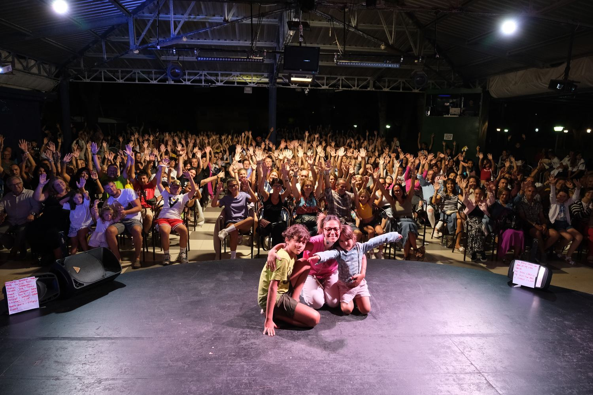
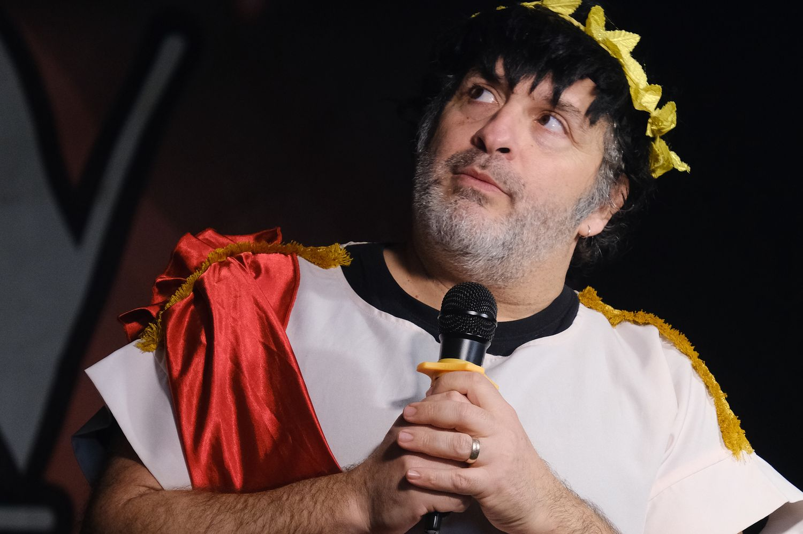

Case study · Azzurro Club Vacanze · 2024–2025
Hospitality · Creator marketing · Organic
Comedy Week: 32.8 million organic views, and what the data said about them
A national stand-up comedy programme run inside a hotel group's resorts, turned into an organic content engine. The reach was big. The more useful part was what tracking it video by video revealed.
Context
Azzurro Club Vacanze runs 13 four and five star resorts. After COVID the group needed to rely less on OTAs and build direct demand. The comedy programme brought comedians from the Zelig circuit into the resorts; each performance was also a short video published on the brand's Instagram, cross-posted from Winter 2025 to YouTube, TikTok and Facebook.
What I did
- Ran the programme across four editions (Winter 2024 to Summer 2025): creator selection, booking, briefs, approvals and publishing.
- Built a tracking sheet with one row per collaboration: creator, edition, views per channel, link. The raw data is in this repo.
- Used it to decide who to invite back and where to spend production time.
Results
Show data table
| Edition | Videos | Instagram views |
|---|---|---|
| Winter 2024 | 8 | 2,891,000 |
| Summer 2024 | 11 | 12,788,777 |
| Winter 2025 | 14 | 3,208,328 |
| Summer 2025 | 10 | 13,922,100 |
What the data said
1. It's a long tail, not an average
The mean video did 763,028 views; the median did 99,100. A gap of 8x means the average describes nothing. The top 10 videos produced 85.3% of reach; the other 33 together did 4,824,205.
Show data table
| # | Creator | Edition | Instagram views |
|---|---|---|---|
| 1 | Giovanni d'Angella | Summer 2025 | 8,000,000 |
| 2 | Chiara Anicito "Cammela" | Summer 2024 | 5,600,000 |
| 3 | Giovanni d'Angella | Summer 2024 | 2,400,000 |
| 4 | Giovanni d'Angella | Summer 2025 | 2,400,000 |
| 5 | Max Cavallari | Summer 2024 | 2,300,000 |
| 6 | Chiara Anicito "Cammela" | Summer 2025 | 2,100,000 |
| 7 | Filippo Caccamo | Winter 2024 | 1,600,000 |
| 8 | Chiara Anicito "Cammela" | Winter 2025 | 1,500,000 |
| 9 | Marco Passiglia | Summer 2024 | 1,300,000 |
| 10 | Lunanzio | Summer 2025 | 786,000 |
| 11 | Lunanzio | Winter 2025 | 761,000 |
| 12 | Pino e gli Anticorpi | Summer 2024 | 746,000 |
| 13 | Chiara Anicito "Cammela" | Winter 2024 | 601,000 |
| 14 | Giovanni d'Angella | Winter 2025 | 427,000 |
| 15 | Daniele Fiamma | Winter 2024 | 324,000 |
| 16 | Alessandro Bianchi | Summer 2025 | 223,000 |
| 17 | Giulia Musso | Winter 2024 | 218,000 |
| 18 | Angelo Pisani | Summer 2025 | 201,000 |
| 19 | Daniele Fiamma e Giorgio Zanetti | Winter 2025 | 173,000 |
| 20 | Daniele Fiamma | Summer 2024 | 157,000 |
| 21 | Andrea Di Marco | Summer 2025 | 141,000 |
| 22 | Chiara Becchimanzi | Summer 2024 | 99,100 |
| 23 | Scintilla Fubelli | Winter 2025 | 86,100 |
| 24 | Scintilla Fubelli | Summer 2024 | 85,400 |
| 25 | I Carta Bianca | Winter 2025 | 54,700 |
| 26 | Chiara Becchimanzi | Winter 2024 | 53,200 |
| 27 | Scintilla Fubelli | Winter 2024 | 52,600 |
| 28 | Vincenzo Comunale | Winter 2025 | 52,100 |
| 29 | Giulia Musso | Summer 2024 | 50,200 |
| 30 | Margherita Antonelli | Summer 2024 | 42,900 |
| 31 | Max Cavallari | Winter 2025 | 36,900 |
| 32 | Giancarlo Kalabrugovic | Summer 2025 | 35,600 |
| 33 | Tiberio Cosmin | Winter 2025 | 30,500 |
| 34 | Giovanni d'Angella | Winter 2024 | 27,400 |
| 35 | Claudio Lauretta | Winter 2025 | 25,100 |
| 36 | Corinna Grandi | Summer 2025 | 22,600 |
| 37 | Marco Passiglia | Winter 2025 | 20,500 |
| 38 | Chiara Becchimanzi | Winter 2025 | 20,000 |
| 39 | Marco Passiglia | Winter 2024 | 14,800 |
| 40 | I Carta Bianca | Summer 2025 | 12,900 |
| 41 | Andrea Di Marco | Winter 2025 | 12,500 |
| 42 | Eianto | Winter 2025 | 8,928 |
| 43 | Andrea Fratellini | Summer 2024 | 8,177 |
The five videos that carried it
2. Two creators carried 70%
Giovanni d'Angella alone produced 40.4% of all views, Chiara "Cammela" Anicito 29.9%. The other 22 acts shared the remaining 29.7%.
The finding I'd defend in any meeting: d'Angella's first video did 27,400 views, among the weakest of the first edition. His fourth did 8 million. Judged on the first collaboration, he would have been dropped. With creators, the value is in the second and third collaboration, so the first one should be treated as a test, not a verdict.
3. Two of four channels weren't worth the work
Instagram produced 32,810,205 views, YouTube 2,759,817, TikTok 51,248, Facebook 19,807. Adapting every video for four channels cost production time; two of them returned almost nothing. YouTube was the exception worth watching: sporadic, but Marco Passiglia's Summer 2024 video did 1.4M there, more than on Instagram.
Show data table
| Channel | Views |
|---|---|
| 32,810,205 | |
| YouTube | 2,759,817 |
| TikTok | 51,248 |
| 19,807 |
What it cost
Each edition ran on a dedicated budget of 40000€, so the four editions cost about 160000€. Charge all of it to reach and the programme delivered 32.8 million organic Instagram views at 4.88€ per thousand, or 4.49€ counting the other channels.
That number is deliberately the worst case, because the fee was not buying a video. It was buying a live show: the comedians performed for guests, in the resort's arena in summer and in the group's theatres in winter, with a peak of about 800 people in the audience for Chiara "Cammela" Anicito at the Lido di Savio village. The entertainment was already part of the guest experience the group sells. The videos were the by-product, which means the true marginal cost of those 32.8 million views was a fraction of 4.88€ per thousand.


Show data table
| Edition | Budget € | Instagram views | Cost per 1,000 views € |
|---|---|---|---|
| Winter 2024 | 40,000 | 2,891,000 | 13.84 |
| Summer 2024 | 40,000 | 12,788,777 | 3.13 |
| Winter 2025 | 40,000 | 3,208,328 | 12.47 |
| Summer 2025 | 40,000 | 13,922,100 | 2.87 |
The average hides the decision. The two summer editions delivered views at 3.13€ and 2.87€ per thousand; the two winter ones at 13.84€ and 12.47€, on exactly the same budget and the same format. Winter cost four times more per view, every time. That does not make winter wrong, because in winter the show filled the group's theatres and the audience in the room was the point. It does mean a winter edition had to be justified by attendance and by the guest experience, not by reach, and budgeting it as a marketing line was the mistake to avoid.
One thing most people get wrong
Creator programmes are usually evaluated per post and per creator, on the first result. That kills exactly the relationships that compound. Budget a first collaboration as a test, set the bar for a second one low, and decide on the second or third.
What didn't work, and what's missing
- No cost per individual creator. The budget is known per edition, not per act, so I can state a cost per thousand views for the programme but not which comedian delivered reach most cheaply. With per-creator fees, the two names carrying 70% of the reach could be priced against the other 26.
- Cross-channel tracking started late. YouTube, TikTok and Facebook were tracked systematically only from Winter 2025, so channel totals understate the first two editions.
- No link to bookings. Views were never tied to direct bookings, which was the business goal.